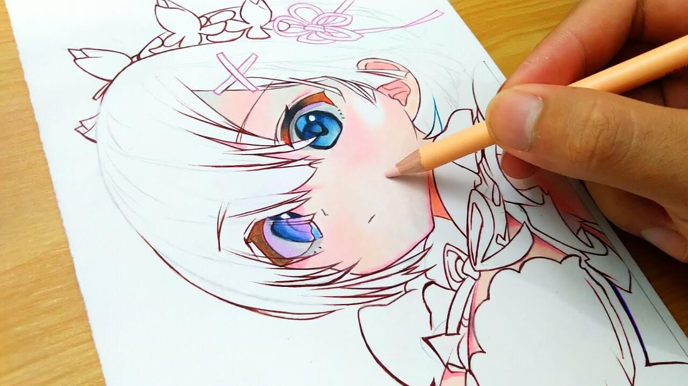

Аниме — японская мультипликация. В отличие от мультфильмов других
стран, предназначенных, в основном, для просмотра детьми, большая
часть выпускаемого аниме рассчитана на подростковую и взрослую
аудитории, и во многом за счёт этого имеет большую популярность в
мире. Аниме отличается характерной манерой отрисовки персонажей и
фонов. Издаётся в форме телевизионных сериалов, а также фильмов,
распространяемых на видеоносителях или предназначенных для
кинопоказа. Сюжеты могут описывать множество персонажей, отличаться
разнообразием мест и эпох, жанров и стилей.
Слово «аниме» происходит от английского слова animation и имеет с
ним одинаковый корень. В японской транскрипции слово animation
произносится трудно и длинно, в связи с чем было заменено на более
короткое и привычное для японцев слово «аниме», состоящее из
закрытых фонем. Существует и другое объяснение, согласно которому
японцы заменили слово animation, которое можно перевести с
английского языка как «одушевление», на «аниме», более близкое к
латинскому корню anima. В настоящее время термин «аниме» уже вошёл в
международный лексикон.
Анимация Японии отличается от анимации других стран, в первую
очередь, тем, что представляет собою развивающийся замкнутый
культурный пласт, включающий в себя множество уникальных сюжетных и
идейных символов, шаблонов, стереотипов и типажей. Аниме выделяется
среди мультипликации других стран своей востребованностью в японском
обществе. Это обуславливает и общая направленность определённой доли
произведений на более взрослую аудиторию, что выражается в большем
внимании к философской и идеологической составляющим, преобладании
«взрослых» мотивов в тематике, и, в том числе, меньшей
табуированностью тем секса и насилия в культуре в целом.
При экранизации аниме обычно сохраняется графический стиль и другие
особенности оригинала. Реже используются другие источники, например,
произведения классической литературы. Есть также аниме, имеющие
полностью оригинальный сюжет (в этом случае уже само аниме может
послужить источником для создания по нему книжных и манга-версий).
Значение термина «аниме» может варьироваться в зависимости от
контекста. В западных странах аниме является объектом исследования
учёных-культурологов, социологов и антропологов. Источниками для
сюжета аниме-сериалов чаще всего являются: манга (японские комиксы),
ранобэ (лайт-новел) или компьютерные игры (как правило, в жанре
«визуальный роман»).
Аниме — японская мультипликация. В отличие от мультфильмов других
стран, предназначенных, в основном, для просмотра детьми, большая
часть выпускаемого аниме рассчитана на подростковую и взрослую
аудитории, и во многом за счёт этого имеет большую популярность в
мире. Аниме отличается характерной манерой отрисовки персонажей и
фонов. Издаётся в форме телевизионных сериалов, а также фильмов,
распространяемых на видеоносителях или предназначенных для
кинопоказа. Сюжеты могут описывать множество персонажей, отличаться
разнообразием мест и эпох, жанров и стилей.